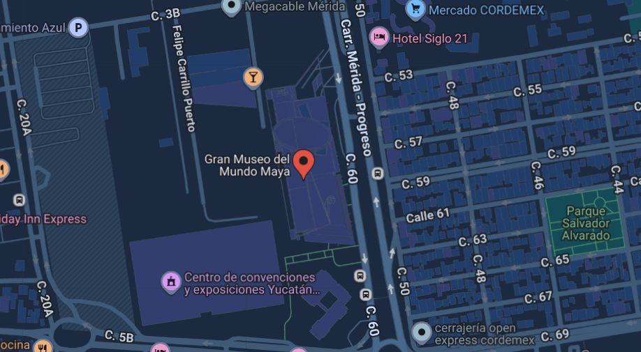

El Gran Museo del Mundo Maya de Mérida es un espacio cultural ubicado en la capital de Yucatán, México. Inaugurado en 2012, está dedicado a preservar y difundir la historia, ciencia y legado de la civilización maya. El museo destaca por su arquitectura moderna y por su extensa colección de piezas arqueológicas, textiles, esculturas y elementos interactivos. Sus salas muestran desde los orígenes de los mayas hasta su influencia en la vida contemporánea, combinando tecnología y tradición. Hoy es uno de los museos más importantes del sureste mexicano y un referente para comprender la riqueza cultural del pueblo maya.
Ubicación |
Información Esencial
|